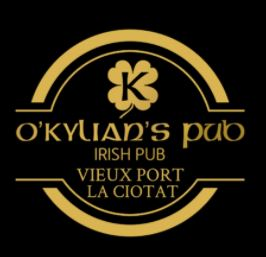

Audrey Berland
6-month Internship in Audit or in Financial analysis
Available from April 2021 to March 2022
Currently in master’s degree in “PGE Audit Expertise” at KEDGE Business School Marseille. I’m a member of ACCEDE Provence Entrepreneurs and responsible for Logistics and CSR of the event "Le Phare de l'Entreprenariat" which will take place on March 11th 2021, at the Parc Chanot in Marseille.
SKILLS
Computing
2018 - C2II, Mastering of Pack Office Microsoft and ERP Software: Sage X3 V12 and Sage Ciel, but also Python-VBA and HTML language.
Technical
General and cost accounting and management of cash, third-parties, fixed assets and capital. Management control and financial diagnosis.
Personal
Meticulous, reliable, autonomous, perceptive, outgoing and open-minded. Interpersonal skills and teamwork.
LANGUAGE
- French
- English
- Spanish
- Portuguese
WORK EXPERIENCE
-
ACCEDE Provence
Marseille, France
LOGISTIC & CSR MANAGER of the event "Le Phare de l'Entreprenariat" - October 2020-March 2021
Know-how: set up a tasks'schedule, canvassing new partnerships, respecting a budget, innovating and anticipating risks.
Know-how: methodical, impartial, responsible and teamwork.
-
RATP DEVELOPPEMENT (Headquarter)
Paris, France
TRAINEE in FINANCE ACCOUNTING & MANAGEMENT - May-August 2020
Know-how: Customer and supplier management, accounting analysis, taxation and improvement in the IT systems.
Soft-skills: rigor, acuity, perspicacity, responsibility and coworking.
-
RESTOAURANTS DU COEUR (AD75 Headquarter)
Paris, France
TRAINEE in FINANCE ACCOUNTING & MANAGEMENT - September 2019-February 2020
Know-how: Input and analysis of accounting records, participation in the annual financial statements, suppliers, customers and employees management.
Soft-skills: rigor, versatility, diligence, precision, responsibility or teamwork.
-
O’KYLIAN’S PUB
La Ciotat, France
MULTI-TASK EMPLOYEE - Summer 2016 & 2018
Know-how: Reception and customer services, waitress, bartender, cashier, stock management and responsible for the opening of the pub.
Soft-skills: sociable, attentive, responsible, dynamic, effectiveness and teamwork.
-
McDONALD’S Restaurant
La Ciotat, France
MULTI-TASK EMPLOYEE - April 2017-May 2018
Know-how: Customer service,cleaning, opening and closing of the restaurant but also inventory management.
Soft-skills: teamwork, punctuality and kindness while being proactive and far-sighted.
EDUCATIONAL BACKGROUND
-
KEDGE Business School
Marseille, France

MASTER PGE - Audit Expertise - Academic Year 2020-2023
Equivalence of the DSCG (5 out of 7 UE), with Work experience over 18 months and the realization of a Proact.
EBERHARD KARLS Universität
Tübingen, Germany
BSC IN BUSINESS & ADMINISTRATION - Avril -Août 2019
ERASMUS PROGRAM – Specialization in Accounting, Management and FinanceCFA (Chartered Financial Analyst) Level I.
AIX-MARSEILLE University
Aix-en-Provence, France
LICENCE IPBE (International Program in Business & Economics) - Academic Year 2016-2019
WITH HONOURS (AB)
Bachelor's Degree in ECONOMICS AND MANAGEMENT (Lectures in English), participation in school events: "Idées fricheurs", "SimONU", "Business game"
MEDITERANNEE HIGH SCHOOL
La Ciotat, France
BACCALAUREAT ECONOMIE & SOCIAL - Academic Year 2015-2016
WITH HONOURS (B)
Option: Advanced Economy
HOBBIES AND INTERESTS
- 2020 ACCEDE Provence Entrepreneurs
- 2019 Les Restos du Coeur
- 2018 Inter 'Eco
hobbies
Music, brain-teaser and chess or participate in events and visits.
Associative life
Sports
Tennis, running, cycling, water sports and dancing.
Travel
Portugal, Morocco, Italy, Germany, England, Netherlands and Canary Islands.